Cerámico.
Disponemos de un amplio surtido de multitud de marcas que nos permite ofrecerte una gama de revestimientos y pavimentos cerámicos en formatos y colores infinitos, que se adaptarán a tus gustos y necesidades de interiorismo y diseño.
Los pavimentos y revestimientos cerámicos, hechos de pasta roja o blanca, acabados con esmalte, pueden usarse tanto en suelo como en pared. Aunque, por su delicadeza, es aconsejable que, cuando se usan como pavimento, se apliquen en lugares domésticos o privados, bodegas, garajes, baños o cocinas. Otra de sus características principales es que, en pared, este material es muy fácil de aplicar y permite infinidad de acabados de todo tipo.
Revisa alguna de las marcas y novedades de pavimentos y revestimientos cerámicos que encontrarás en nuestra tienda/showroom de Barcelona. Únete a nuestras redes sociales y newsletter para estar al día de novedades, consejos y proyectos que realizamos.
Marcas en el showroom
- Cevica
- WOW
- Vives
- Aleluia
- Primus
- Aparici
- Equipe
- Ragno
- Revigres
Y si lo que buscas no está en exposición, lo buscamos en la Bagnoteca.
Novedades 202638

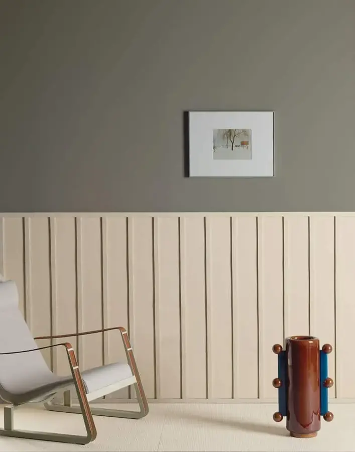
Cerámico¿Puede una pared tener relieve sin perder el control de la luz?
El relieve suele traer sombras que no siempre se buscan.
Ronan Bouroullec lo controla en Motivo, para Mutina: azulejos de bicocción de 14×28 cm y tiras de gres porcelánico UGL de 2,8×28 cm, en piezas T, L y Terminal, libres de COV.
Te mandamos las combinaciones posibles si el espacio necesita esa precisión.

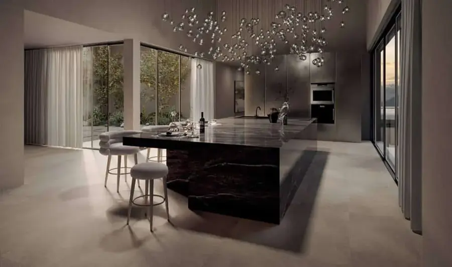
CerámicoPasar de dentro a fuera sin que el suelo cambie de carácter no es tan sencillo.
Interior y exterior casi siempre acaban resueltos con materiales distintos.
Cotto d’Este no lo ve así. Arketipo combina áridos, escamas y morteros de cemento en cinco formatos y cuatro espesores —desde 14 mm hasta la Kerlite Solida ultrafina 3plus—, con seis acabados que mantienen la misma lectura en ambos espacios.
Si tu espacio combina interior y exterior, te mostramos toda la gama.

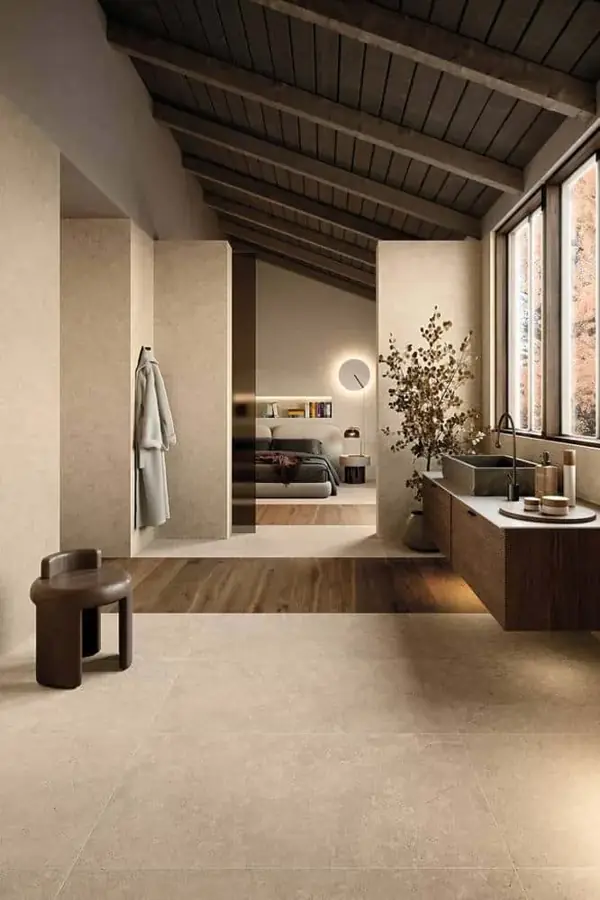
CerámicoPavimentos revestimientos cerámicos Pura – Cotto d’este
Premiada solución cerámica, inspirada en la piedra caliza, que resuelve la continuidad estética en proyectos que transitan del interior al exterior (suelos y paredes).
Disponible en varias tonalidades, acabados y espesores, su versión en Kerlite ofrece una densidad mecánica superior, resistente a impactos y suciedad.
Para revestimientos o rehabilitaciones, su refuerzo con fibra de vidrio garantiza durabilidad y estabilidad estructural en pavimentos de grandes formatos y uso intensivo.
La colección integra protección antibacteriana PROTECT® garantizando una higiene permanente necesaria en proyectos contract y residenciales.
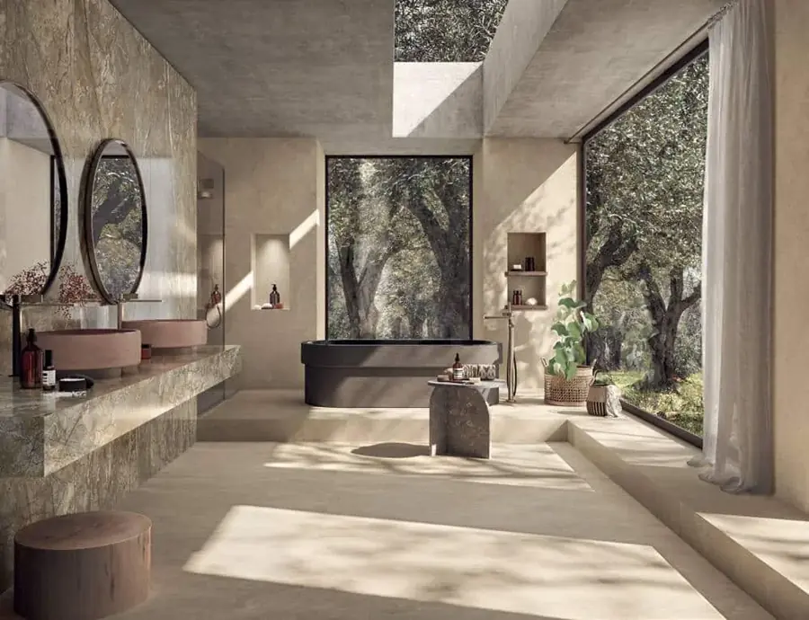
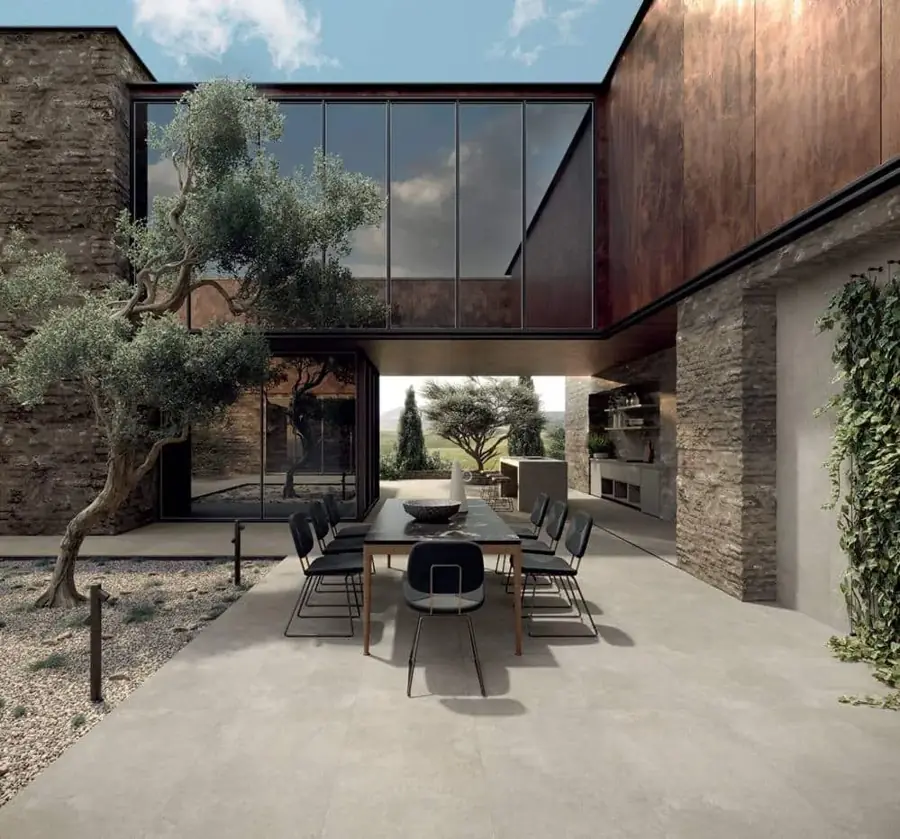
CerámicoPavimentos revestimientos cerámicos Solaris – Cotto d’este
La colección Solaris de Cotto d’Este reproduce en cerámica una piedra caliza de inspiración mediterránea con una gráfica suave y luminosa, pensada para generar continuidad entre interior y exterior.
Se estructura en cuatro tonalidades cálidas, cinco acabados y varios espesores, lo que permite resolver desde pavimentos hasta revestimientos y grandes superficies.
Su sistema modular facilita composiciones coherentes y transiciones limpias, aportando calidez al espacio y una lectura uniforme de la escena sin recurrir a piedras naturales más exigentes en mantenimiento.
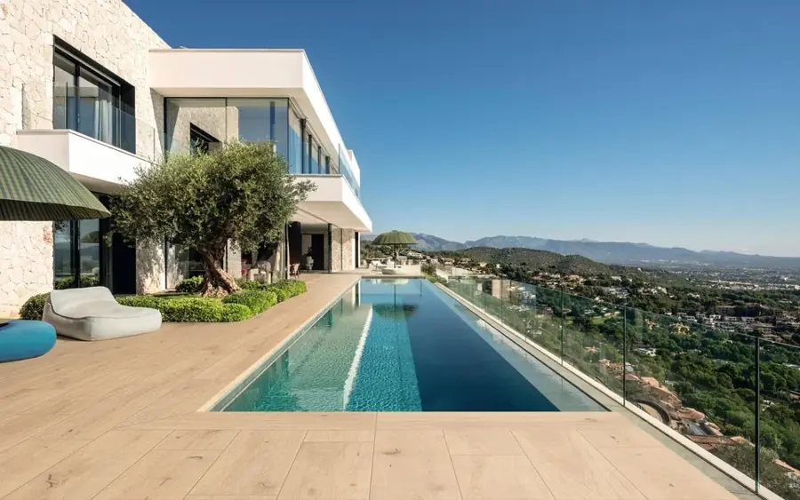
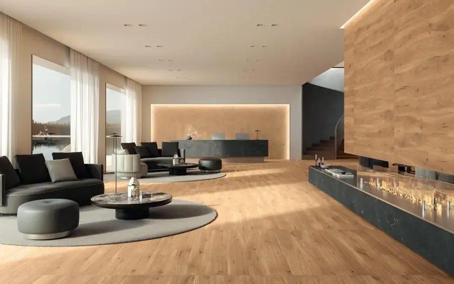
CerámicoRevestimientos cerámicos LOG - Atlasconcorde
Log es una propuesta cerámica que traslada a superficies porcelánicas las cualidades del roble natural, con un veteado realista disponible en cinco tonos y dos selecciones:
Natural, de apariencia uniforme, y Forest, más rústica y con nudos visibles.
La colección ofrece múltiples formatos de gran tamaño, desde listones hasta grandes placas.
Para interiores, incluye relieves lineales 3D y grandes placas que aportan continuidad visual.
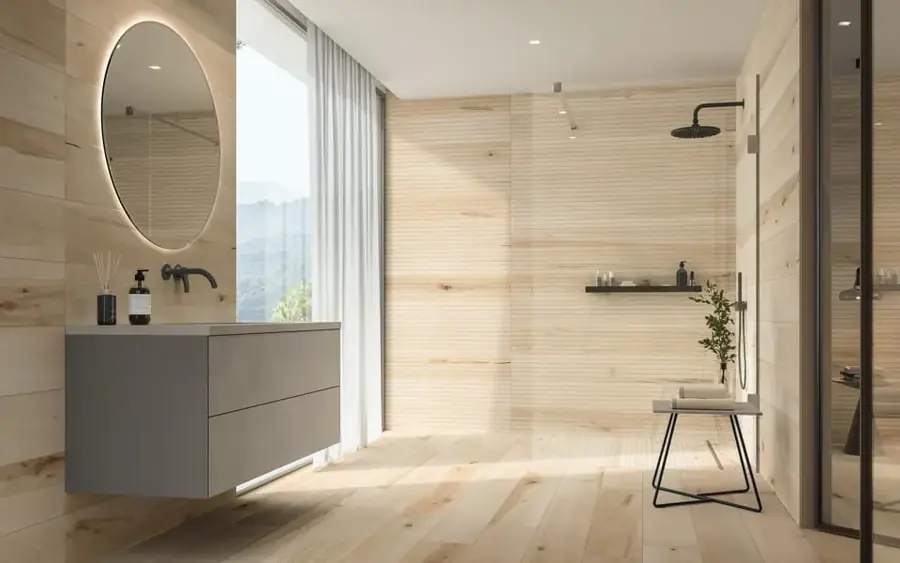
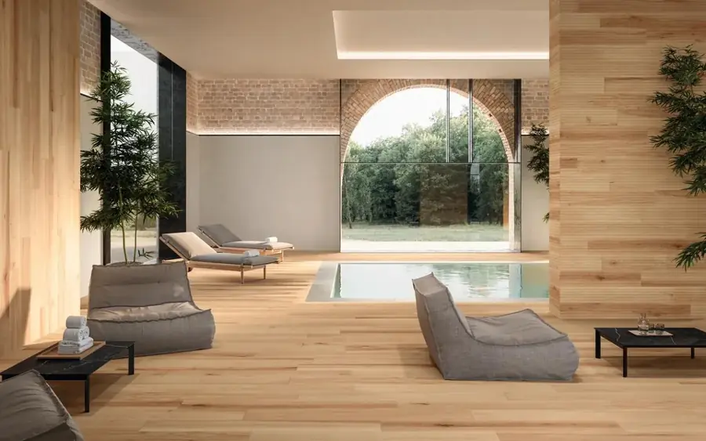
CerámicoRevestimientos cerámicos LOG CANSEI - Atlasconcorde
Log Cansei traduce la madera de haya del bosque de Cansiglio a cerámica, ofreciendo una colección limitada a 5 tonos naturales y 2 formatos 20×120 y 18,5×150 cm.
Disponible en un único grosor, es apta tanto para interiores como para espacios exteriores. Para estos últimos, incluye acabado antideslizantes C3/R11 y un mosaico lineal Decor en 3 variantes.
Una propuesta exclusiva que combina la calidez de la madera con la durabilidad y el bajo mantenimiento de la cerámica.
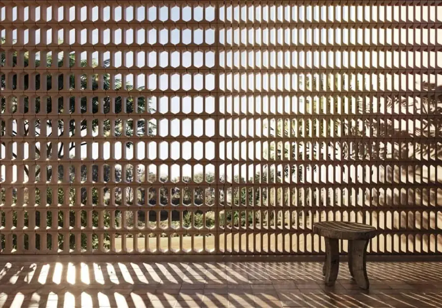
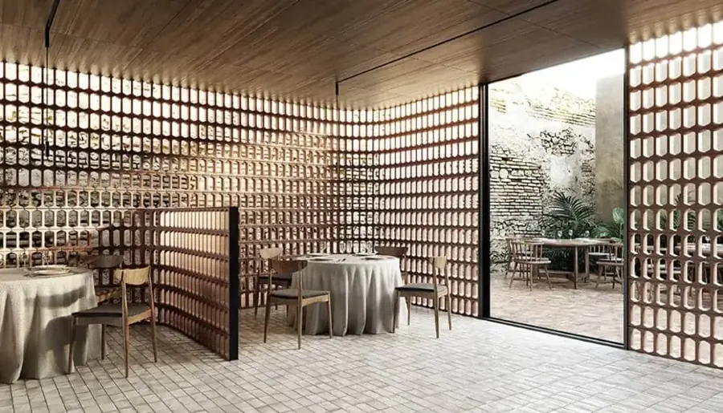
CerámicoCelosia Icon – WOW Design
ICON de WOW Design, diseñada por Summum Studio, reinterpreta la cerámica arquitectónica como una piel modular de geometría pura y sin ornamentos. Sus piezas mate en formatos 10×20×10 cm y 6×20×10 cm, en tonos cálidos como Cotto y Sand, aportan textura y control lumínico.
En proyectos como el restaurante Meet Point, su entramado cerámico define volúmenes, filtra luz y genera privacidad. Versátil para paredes, biombos o celosías, ICON crea atmósferas contemporáneas y escultóricas que fusionan función, emoción y modernidad.
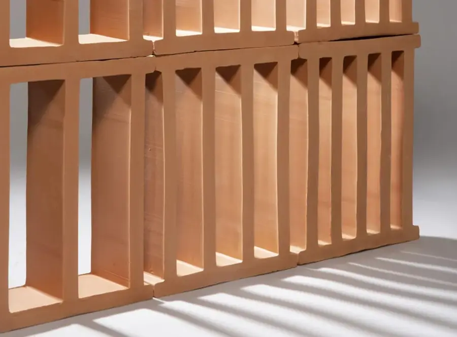
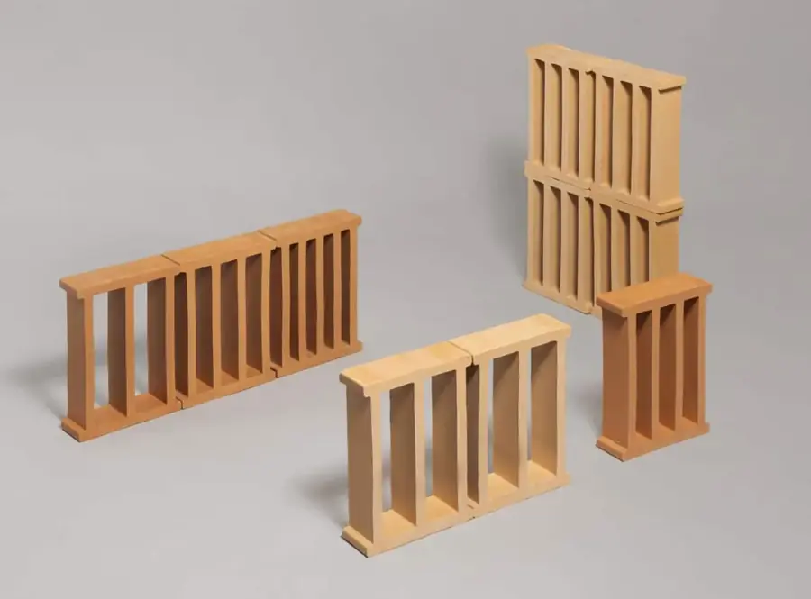
CerámicoCelosías cerámicas Empuries - Ceràmica Ferrés
La colección Empúries de Ceràmica Ferrés, diseñada por Emiliana Design Studio y galardonada con el premio ADI Delta de Bronce 2024, propone celosías cerámicas de líneas limpias y gran versatilidad. Disponible en dos tonos naturales (Terracota Arena 14 y Rojo 15), su diseño minimalista permite tres niveles de transparencia u opacidad, generando componibles modulares que crean tramas sutiles de líneas verticales.
Cada pieza se puede combinar con las demás, ofreciéndose múltiples configuraciones: pantallas, biombos, cerramientos exentos o elementos en fachada ventilada para controlar la luz y el aire. Gracias a su geometría regular, Empúries aporta un ritmo visual delicado y una sensación de ligereza, incluso en instalaciones amplias.
La gama se complementa con elementos de esquina (“Corner Final”, “Angle 90”, “Arc 90”, “Arc 120”) que permiten bordes refinados y continuidad en los encuentros, adaptándose a cualquier proyecto constructivo o decorativo. El resultado visual combina herencia mediterránea y rigor contemporáneo, ideal para espacios que demandan privacidad parcial, control lumínico y una textura cerámica cálida.
Empúries ofrece además prestaciones técnicas propias de la cerámica de exterior, apta para fachadas, patios o espacios contract. Su acabado mate y aspecto artesanal refuerzan una estética moderna con un toque artesanal, perfecta para ambientes que buscan combinar tradición y funcionalidad.
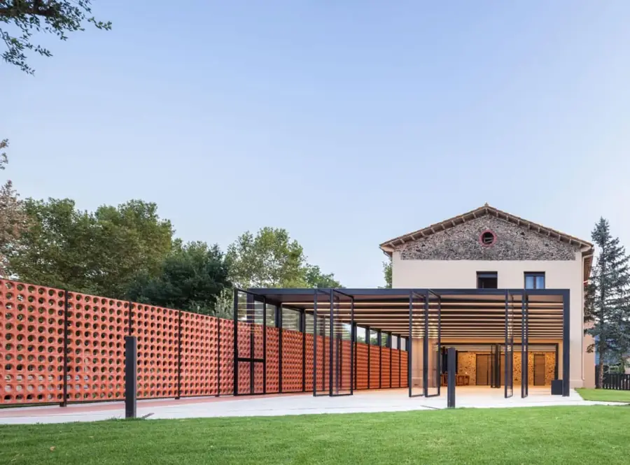
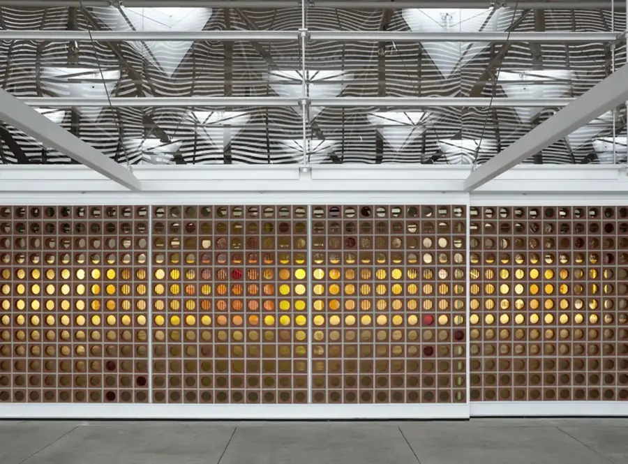
CerámicoCelosía Estartit - Ceràmica Ferrés
La celosía Estartit de Ceràmica Ferrés es una pieza cerámica de gran pureza formal, donde un círculo queda inscrito en un cuadrado para generar una trama reticular elegante y minimalista. Disponible en formato 15 × 15 × 5,5 cm, cada módulo pesa aproximadamente 1,15 kg y presenta pequeñas variaciones inherentes a la cerámica artesanal, lo que potencia su carácter auténtico.
Esta celosía se presta a múltiples aplicaciones: desde paneles divisorios ligeros y biombos hasta celosías decorativas en fachadas o muros interiores. Su geometría repetitiva consigue una atmósfera rítmica y equilibrada, a la vez que ofrece control visual y lumínico sin sacrificar la conexión con el entorno.
Fabricada en gres cerámico extruido, la Estartit admite acabado esmaltado en una amplia gama de colores (pizarra, terracota, negro, pasteles…) así como cerámica natural en tonos terracota y arena, apta tanto para interiores como exteriores. Su superficie proporciona textura visual y táctil y combina con otros elementos arquitectónicos, sumando valor tanto estético como funcional.
Una característica distintiva es el modelo “A”, con su cara fresca apta para incrustar vidrio o acrílico, lo que permite crear instalaciones con juegos de color y luz translúcida, perfectas para divisiones más sofisticadas.
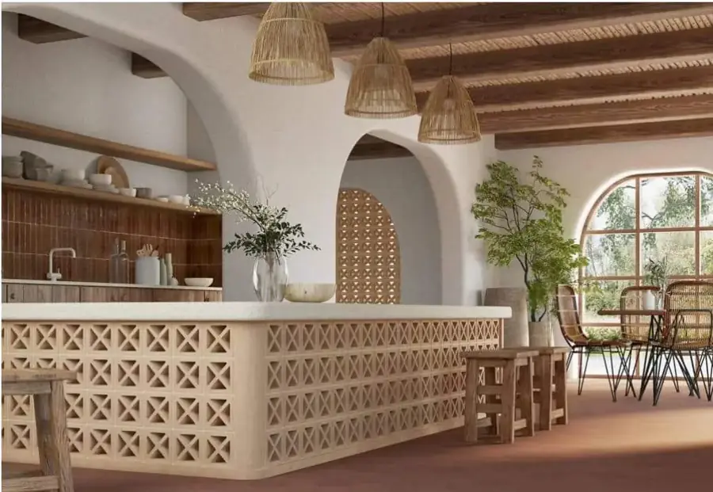
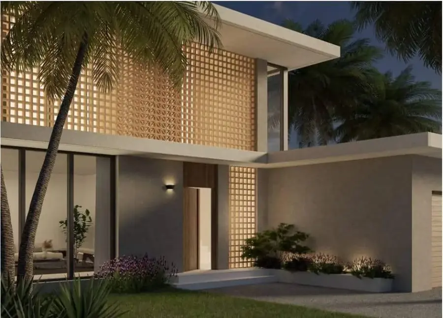
CerámicoCelosía Symbol - Cevica
Piezas cerámicas en formato modular de 15×15 cm, diseñadas para controlar la entrada de luz y definir espacios interiores o exteriores con un efecto visual ligero y natural.
La colección Symbol permite jugar con combinaciones personalizadas, de mayor o menor apertura según las necesidades del proyecto, creando ambientes íntimos sin perder luminosidad.
Ideal para aplicaciones decorativas o funcionales en hoteles, restaurantes y espacios residenciales. Un recurso económico y versátil para delimitar áreas sin comprometer la estética.
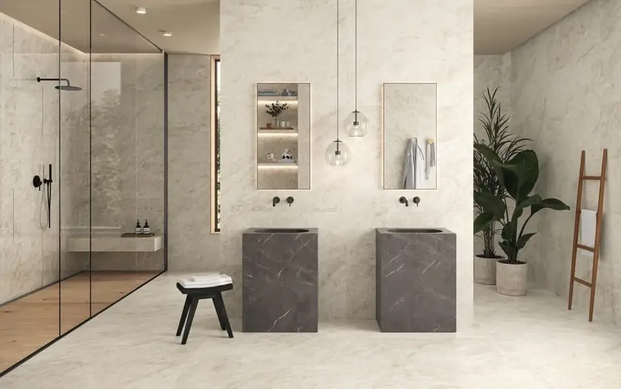
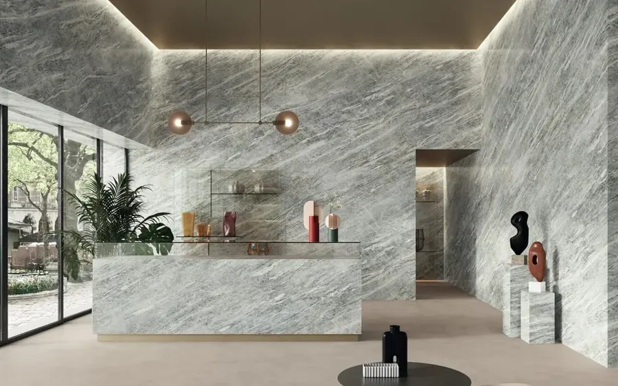
CerámicoPavimentos cerámicos imitación mármol Marvel Diva – Atlas Concorde
Marvel Diva explora el potencial expresivo del mármol con una colección de 10 porcelánicos que destacan por su fidelidad interpretativa del material, variedad de acabados y gran formato.
Cada diseño se presenta con el acabado óptimo para realzar su veta y textura: brillo para los mármoles cristalinos, superficies Silk o Velvet para los satinados.
Ideal para espacios donde el pavimento actúa como protagonista visual, sin renunciar a la resistencia, regularidad y versatilidad del gres porcelánico.
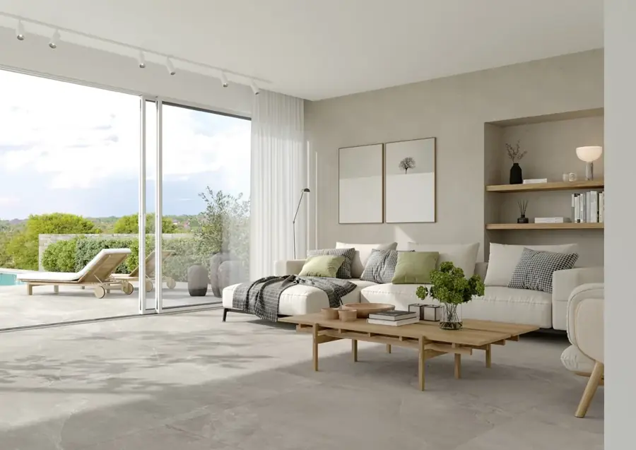
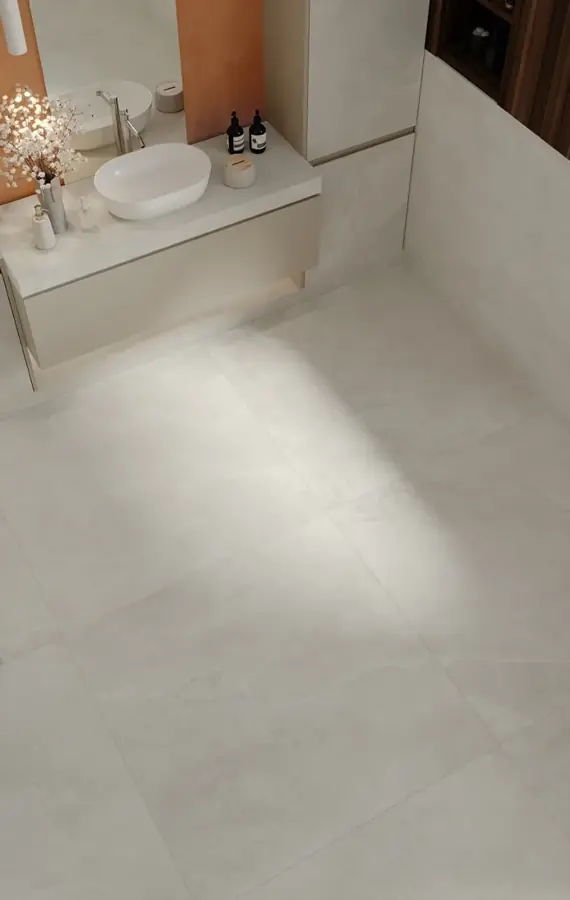
CerámicoPavimentos cerámicos estilo industrial Azuma Rock – Imola Ceramica
Pavimentos que combinan la sobriedad técnica del cemento con la riqueza estética de la piedra, ofreciendo un diseño industrial a los espacios.
La versatilidad de los materiales y su paleta de colores -marfil, plata, camargue, gris, arena, blanco-, permite adaptarse a todo tipo de proyectos, desde residenciales hasta comerciales.
Disponible en siete formatos (120x278cm, 120x120cm, 60x120cm, 60x60cm, 30x60cm, 90x90cm, 30x30cm) y tres espesores (6,5, 10 y 20 mm), esta colección aporta mayor expresividad visual y realismo a suelos y revestimientos.
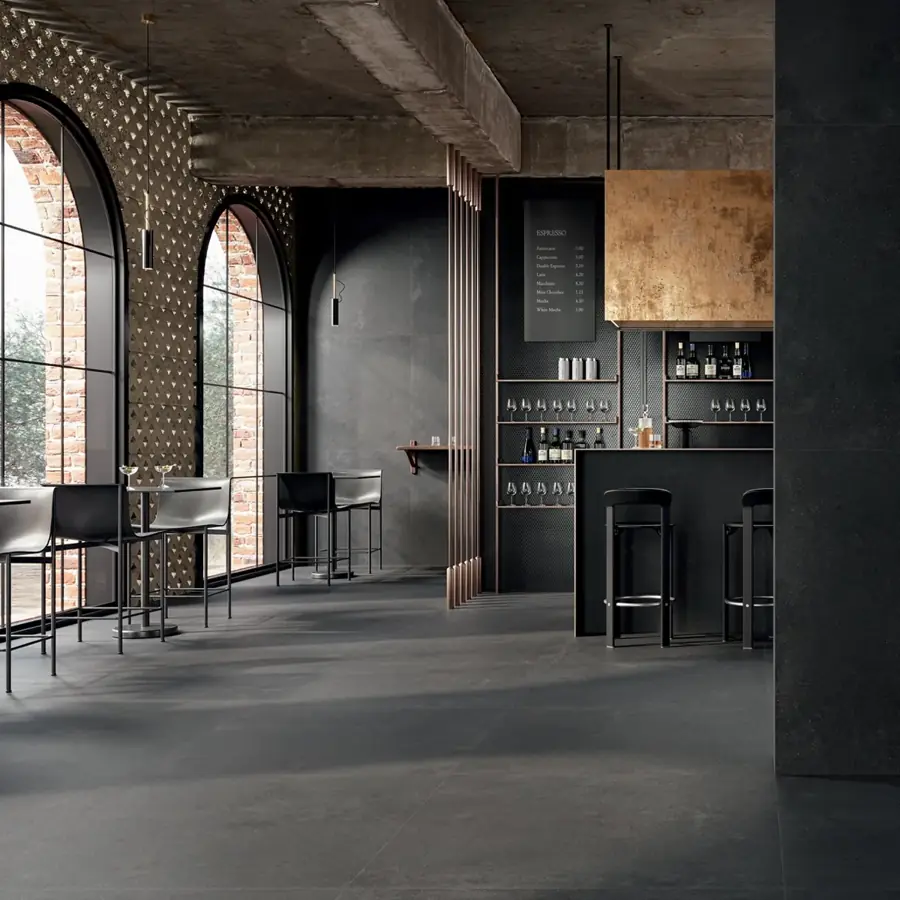
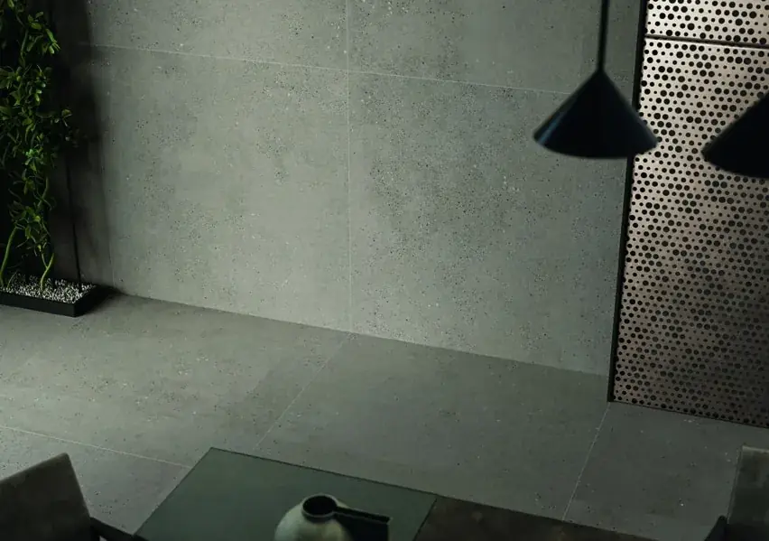
CerámicoPavimentos cerámicos cemento REPLAY – Imola Ceramica
Pavimentos cerámicos para suelos y paredes. Una reinterpretación del cemento disponible en una paleta de 6 tonalidades neutras.
La colección de Imola está disponible en cinco formatos modulares (120x120cm, 60x120cm, 60x60cm, 30x60cm, 30x30cm) de 10,5mm de espesor.
Apto para uso interior y exterior, su versatilidad lo convierte en una solución eficaz para todo tipo de proyectos: viviendas, comercios, espacios públicos, etc.
Especialmente pensados para zonas de alto tránsito que buscan un alto rendimiento técnico sin renunciar a la estética.
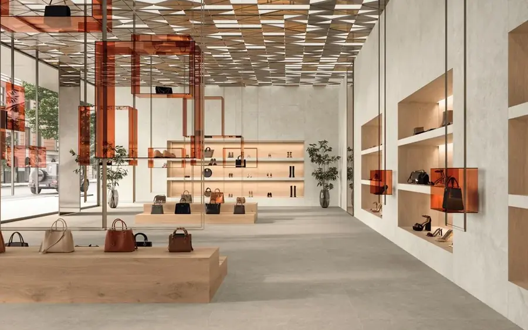
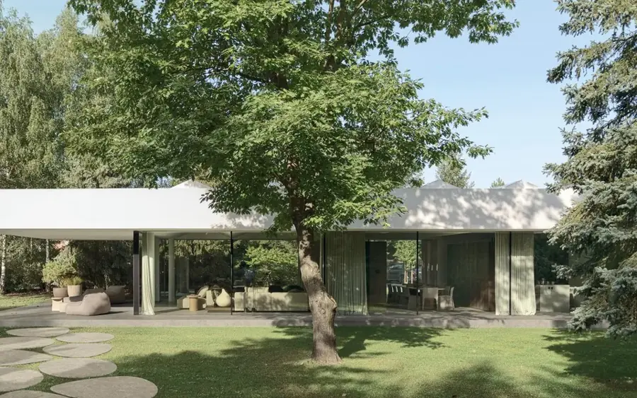
CerámicoPavimentos cerámicos Boost Icor – Atlas Concorde
Boost Icor interpreta la piedra caliza con alto detalle táctil y visual, integrando acabados 3D y texturas para muros y suelos.
Su gama cromática ofrece 6 tonalidades neutras entre el gris y el beige, permitiendo su instalación entre interior y exterior, ideal para proyectos que requieren continuidad y unidad espacial.
Concebida por el innovador estudio Archea Associati, la colección combina rendimiento técnico, estética contemporánea y riqueza decorativa.
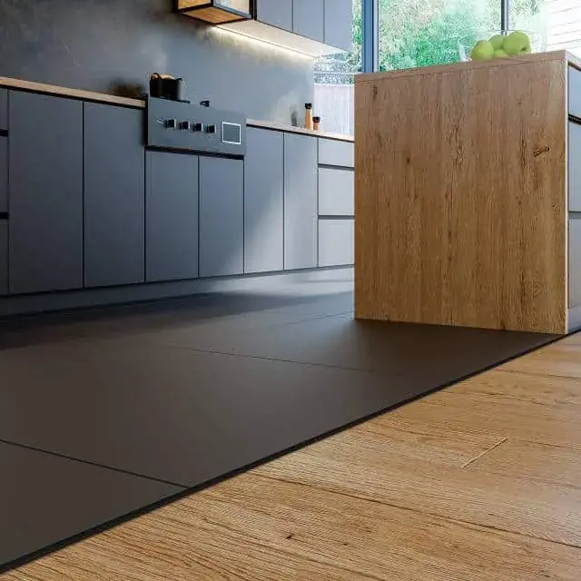
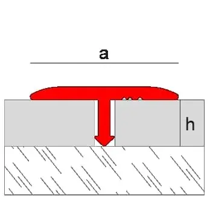
CerámicoPerfil para pavimentos/revestimientos Novosepara Mini - EMAC
Perfil de aluminio para separar juntas en revestimientos de bajo espesor como cerámicos, vinilo o moqueta. Con una cara vista de solo 15 mm y un ala de 5mm, su diseño permite integrarlo fácilmente en proyectos donde se requiera una transición casi invisible entre materiales de distinta naturaleza.
Ideal para pavimentos y paredes, es sencillo de instalar tanto antes como después del revestimiento.
La versión MINI de Novosepara está disponible en acabados anodizados en plata mate y negro mate.
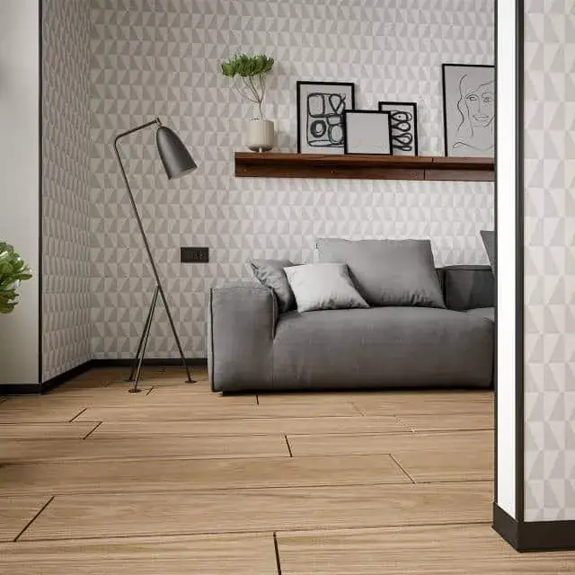
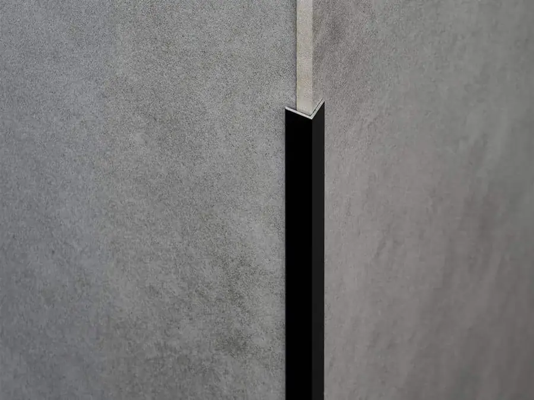
CerámicoPerfil Novoescuadra MINI – EMAC
Para proteger esquinas con la máxima discreción. La forma biselada de este perfil de aluminio con cara vista mínima (13 mm), lo hace apto para revestimientos delicados como papel pintado o cerámicas de bajo espesor.
Ideal en proyectos que priorizan líneas limpias y acabados cuidados.
Disponible en varios acabados neutros y metálicos. Una solución técnica con un diseño prácticamente invisible.
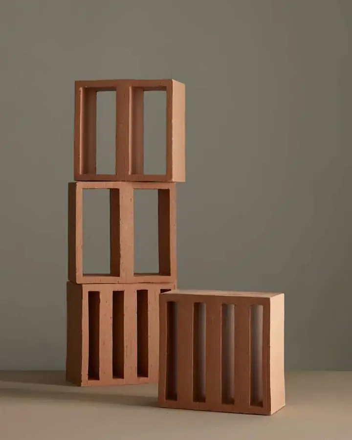
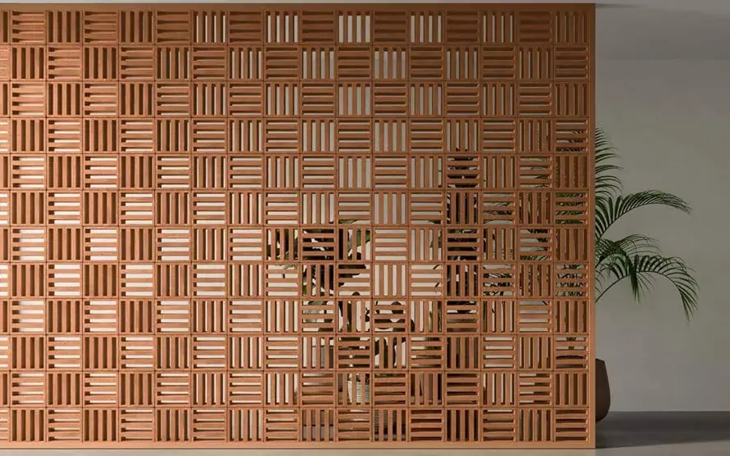
CerámicoRevestimientos ladrillo de terracota Tally - Mutina
Tally es el nombre elegido por el diseñador Michael Anastassiades para su reciente serie de revestimientos en ladrillo de terracota.
Fiel a su estilo, la nueva propuesta de Michael explora la interacción generando objetos expresivos que convierten las superficies en auténticos lienzos estructurales.
Con grandes referencias al sistema de marcas de conteo “Tally marks”, la colección se distingue por sus líneas geométricas en vertical distribuidas de forma variada, facilitando una combinación genuina al unir sus piezas.
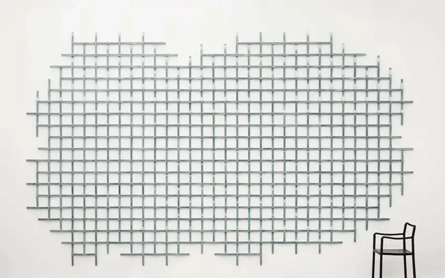
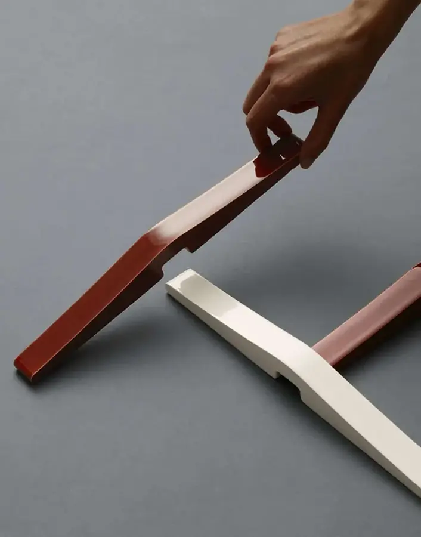
CerámicoMódulos cerámicos Adagio - Mutina
Adagio es la última creación de Ronan Bouroullec para Mutina, compuesta por módulos cerámicos diseñados para fundirse y formar esculturas murales únicas. La forma de su estructura se asemeja a la textura de un tejido, con un relieve acentuado a causa de la superposición de piezas.
Inspirado en tempos musicales, el nombre «Adagio» refleja la aplicación lenta y precisa de cada elemento. Este proceso detallado de articulación resulta en una obra que combina arte y diseño, ofreciendo una estética sofisticada y envolvente.
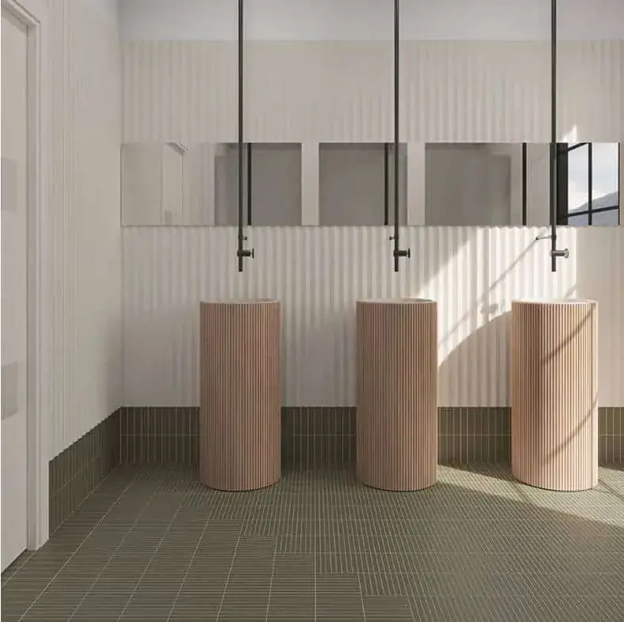
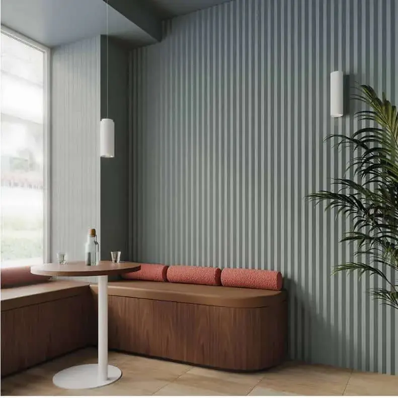
CerámicoRevestimientos con volumen y formas Faces Collection - Wow Design
El exclusivo estudio de diseño estadounidense Wow sorprende con su nueva colección Faces.
Siendo fiel a su especialización, la marca presenta este ambicioso proyecto en cerámica dándole la vuelta a los límites de la decoración en paredes.
Faces es una pura representación de lo que la tierra nos brinda. Tanto en formato como en tonalidades, la gama de revestimientos recuerda a sus formas naturales: por un lado, encontramos los modelos Costa y Duna con detalles ondeados, y por otro, los modelos Valley y Hill con acabados puntiagudos que, como su propio nombre indica, recuerdan a un valle o un pico.
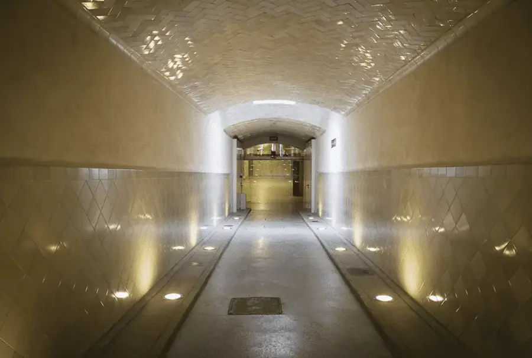
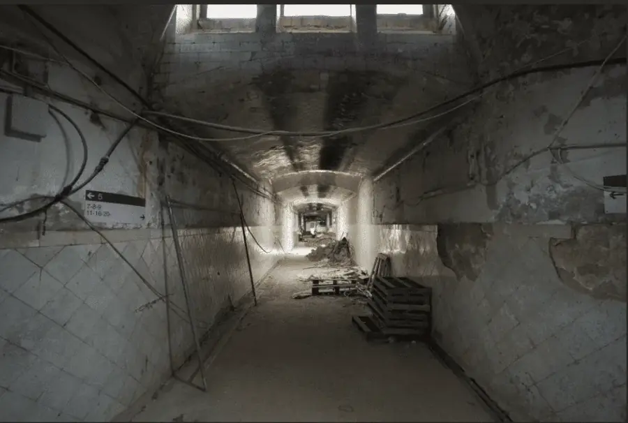
CerámicoCerámicas artesanales – Fàbrica de Rajoles de Tous
Con más de 40 años a sus espaldas, y siendo referentes en la restauración de enclaves históricos/artísticos, su sello distintivo lo encontramos en la forma que trabajan la cerámica.
El proceso natural de toda propuesta pasa por analizar su origen, entender los materiales usados, el objetivo que perseguían, y conseguir mantener siempre la esencia de cualquier proyecto.
Poniendo foco en la innovación, la Fàbrica de Rajoles de Tous ha desarrollado en su propio laboratorio los acabados más vanguardistas en cenefas, molduras, azulejos, etc. Infinidad de opciones que transmiten su marca de identidad; esmaltes y texturas que se adaptan a cualquier época sin sobresaltar.
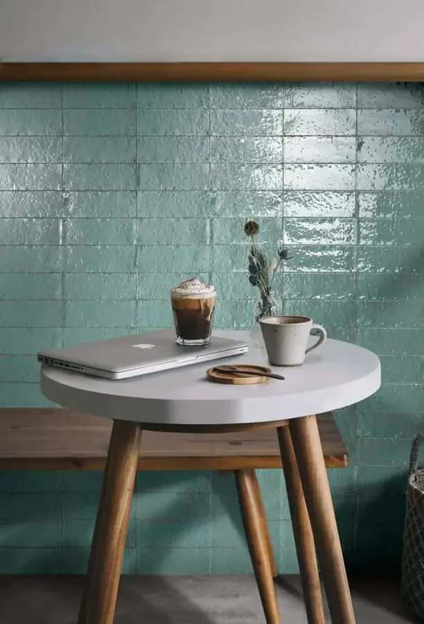
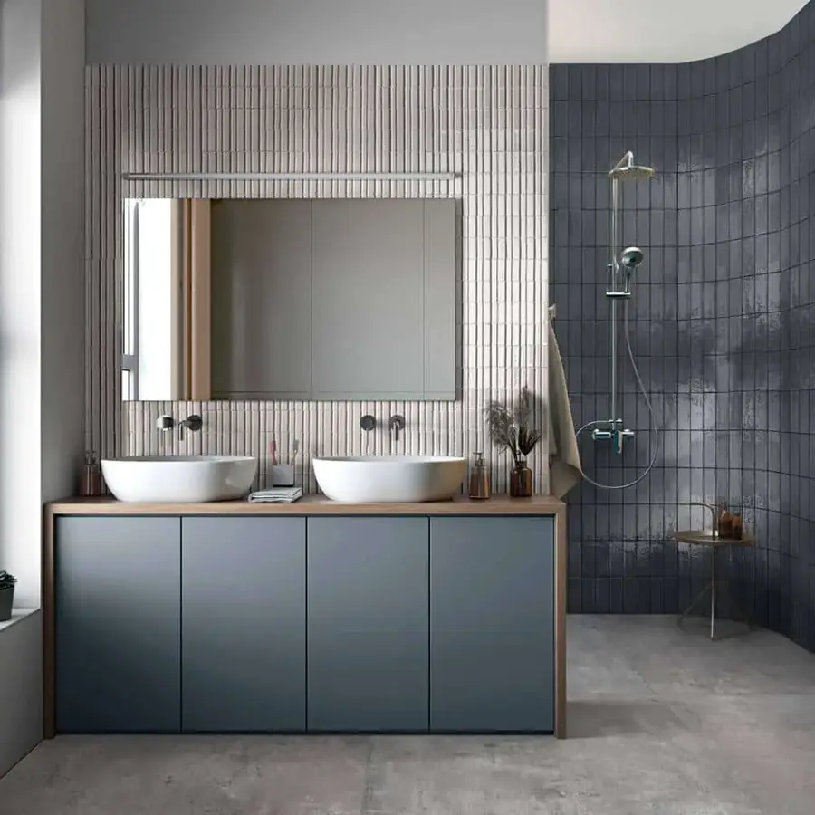
CerámicoAzulejos cerámicos Glacé - Ragno
Ragno desvela su más reciente innovación en el mundo de los azulejos: la colección de gres porcelánico «Glacé».
Glacé encarna a la perfección la unión entre la sofisticación que brinda la vanguardia tecnológica y la autenticidad intrínseca de la cerámica artesanal.
Los detalles que presenta en su diseño te transportan hacia una estética meticulosamente elaborada, que transmite la sensación de haber sido creada a mano.
La versatilidad de Glacé se manifiesta en su formato, presentado en piezas de dimensiones de 7,5 x 20 cm, y en la amplia gama de tonalidades disponibles para hacer de cada estancia un espacio único.
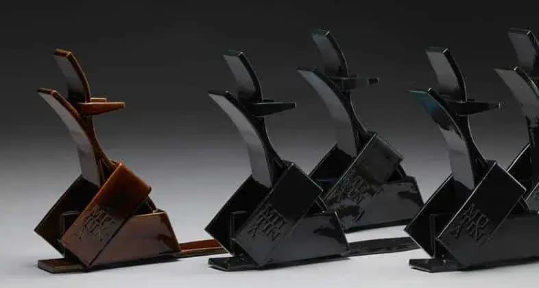
CerámicoElementos Cerámicos Lobo de Patricia Urquiola – Mutina
Patricia Urquiola, una de las diseñadoras de referencia de Mutina, vuelve a conseguirlo con Lobo. Ella es la encargada de transmitir el alma de la marca a esta colección cerámica que se inspira en el perfil de un lobo aullando.
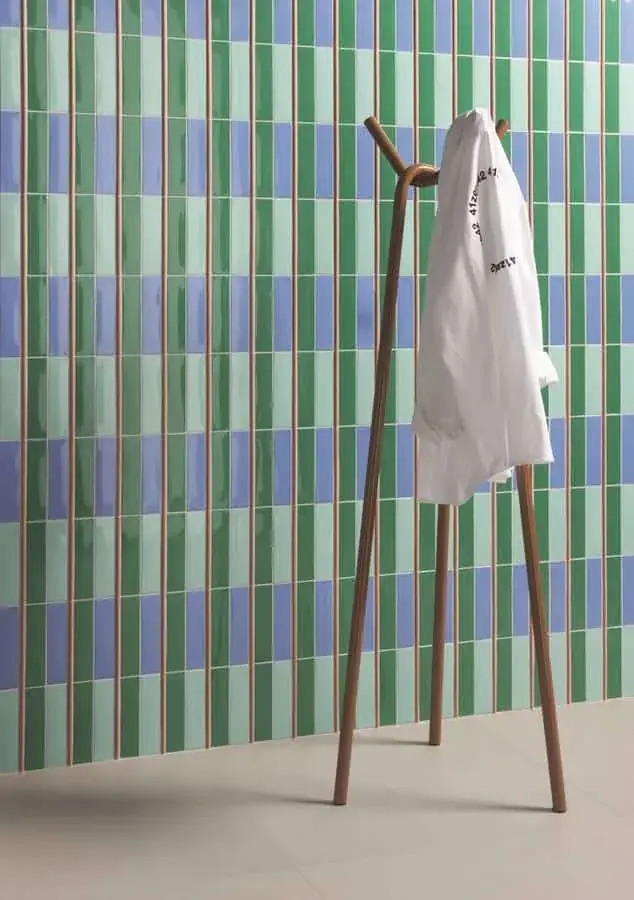
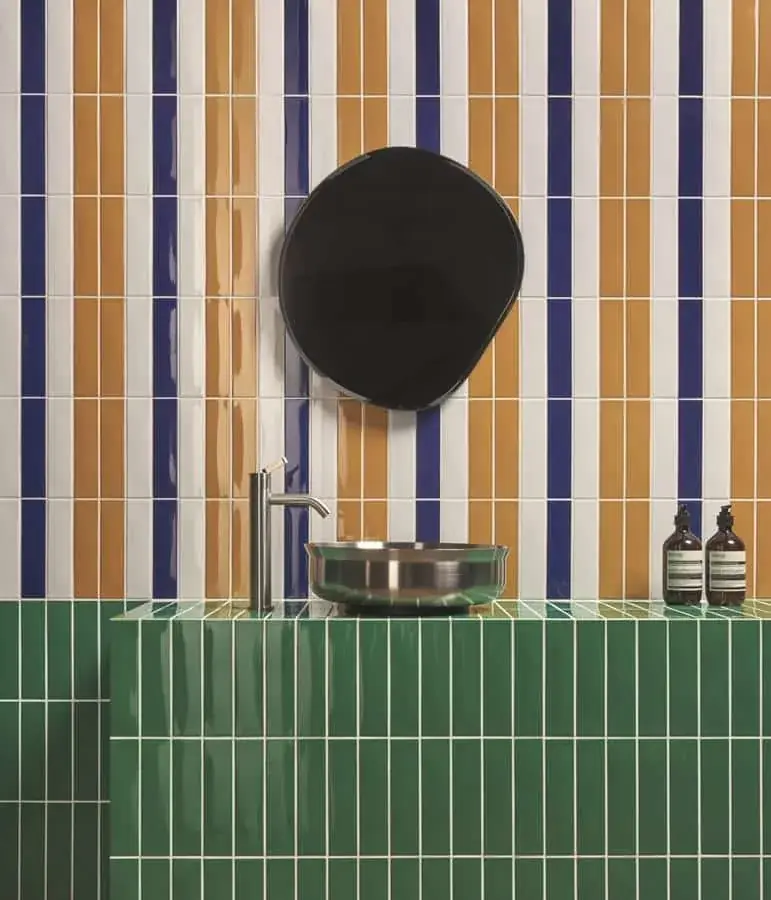
CerámicoRevestimientos cerámicos Kappa – 41zero42
Doce colores intensos son los escogidos para dar visa a estos revestimientos cerámicos de 41zero42. Con una estética artesanal, esta colección evoca las fachadas exteriores de los edificios de los setenta del siglo pasado.
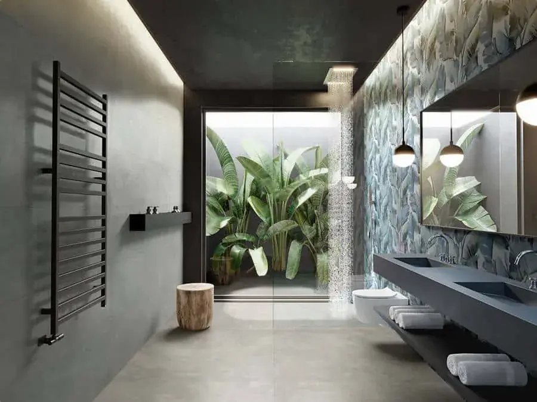
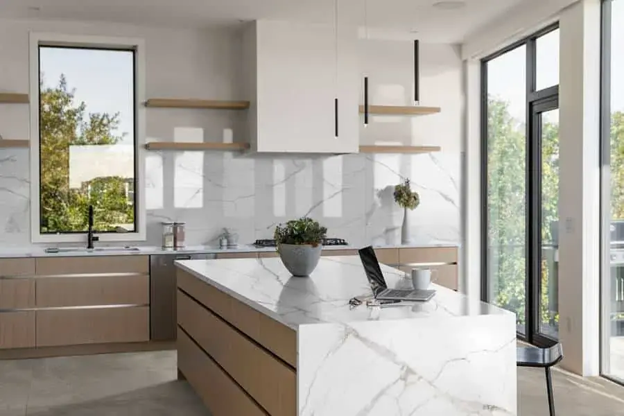
CerámicoRevestimientos cerámicos Mixed - Ragno
Como su propio nombre indica, Mixed es una mezcla de texturas y cromatismos naturales, de tonos elegantes y sosegados. Una combinación de distintas superficies marmóreas que evocan los enlucidos.
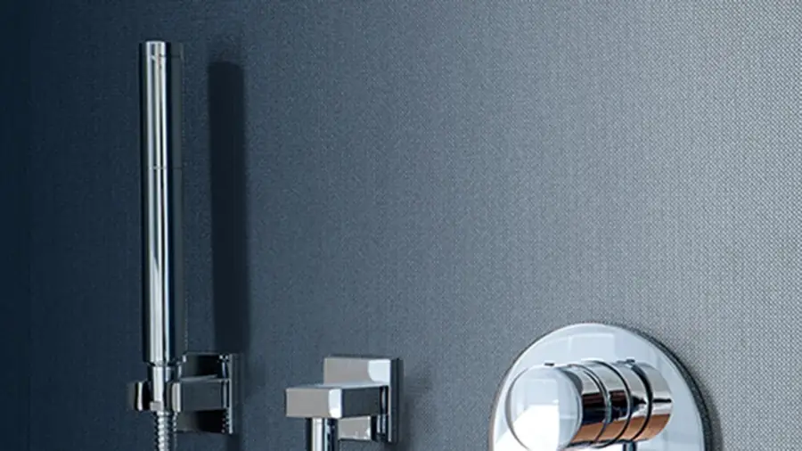
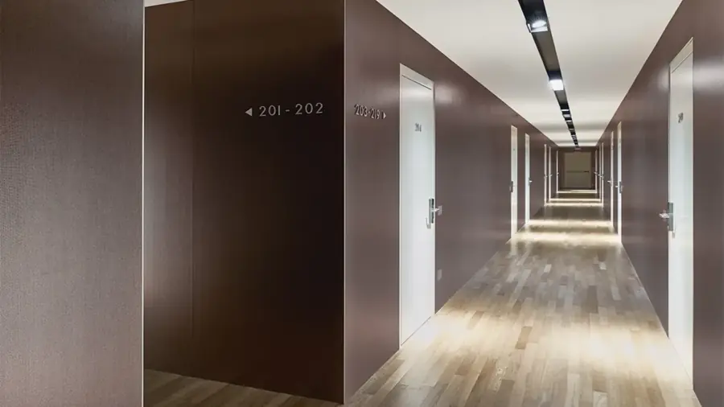
CerámicoPavimentos y revestimientos cerámicos acabado Filo - Laminam
Filo, de Laminam, evoca la imagen de un hilo iridiscente entrelazado. Un estética muy reconocible en las superficies arquitectónicas, de una complejidad y elegancia clásica que recuerda a las gemas.
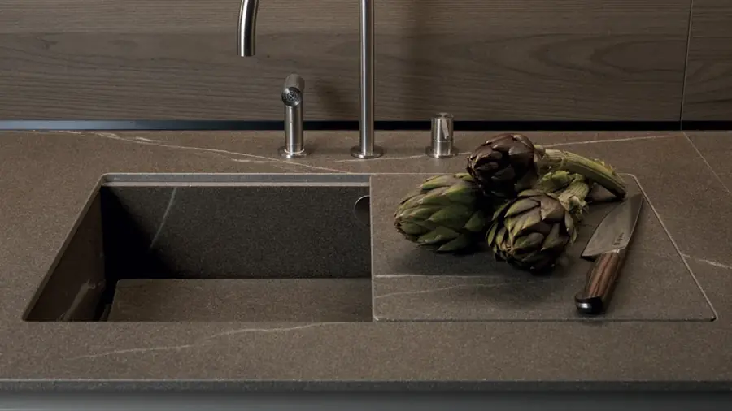
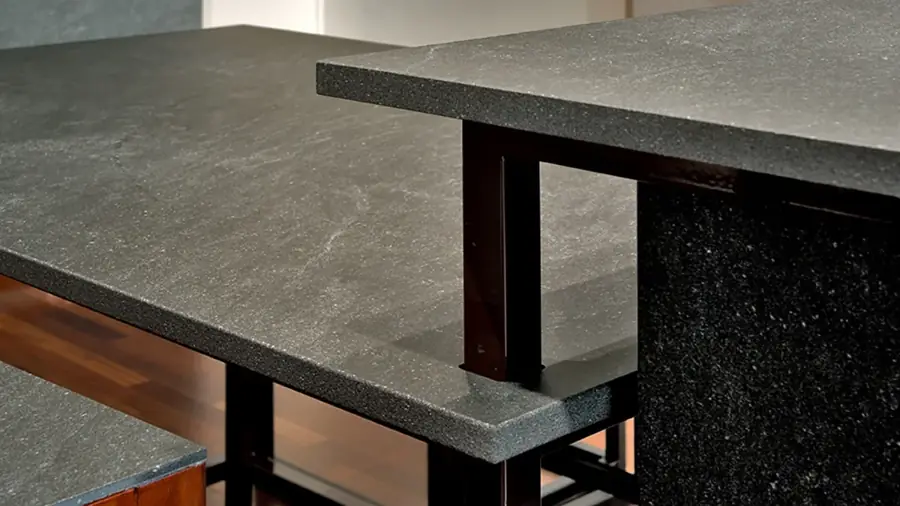
CerámicoPavimentos y revestimientos cerámicos In-Side - Laminam
Porfido, Piasentina y Cardoso. Tres grandes materiales, muy apreciados en la tradición italiana, son los protagonistas de In-Side, una colección de pavimentos y revestimientos de Laminam, de una estética de “piedra cerámica”.
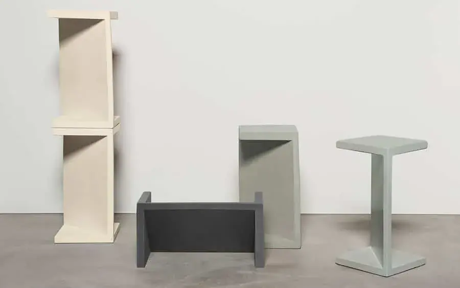
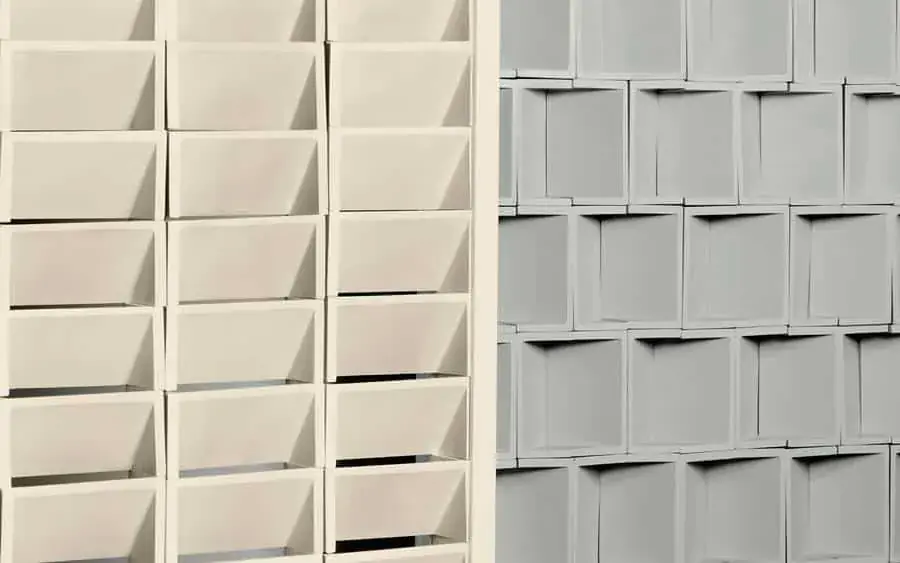
CerámicoElementos Cerámicos Mistral – Mutina
Una innovación en elementos 3D, que se aleja de lo clásico, para dar acceso a una propuesta rompedora. Inspirada en la arquitectura clásica italiana, Mistral de Mutina ofrece un solo módulo de terracota hecho a mano para fundición de gran funcionalidad.
- Cerámico
Elementos Cerámicos Celosia – Mutina
Una reinvención del proceso de fabricación artesanal de la terracota, manteniendo la belleza de lo imperfecto, característica en “lo hecho a mano” y el transcurso de los años. Celosia de Mutina es una propuesta muy avanzada a su tiempo, que sabe mantener el encanto de lo tradicional.
- Cerámico
Elementos Cerámicos Brac – Mutina
Mutina presenta una exclusiva colección de ladrillo cerámico diseñada por Nathalie Du Pasquier. Elementos tridimensionales pensados para dar un amplio abanico de posibilidades en la creación de estructuras y paredes.
- Cerámico
Elementos Cerámicos Bloc – Mutina
Un ladrillo de terracota hecho con el proceso de extrusión artesanal. Mutina ha propuesto una colección de elementos tridimensionales para crear estructuras, tanto arquitectónicas como decorativas, de distintas tonalidades: Pearl, Blue, Red y Grey.
- Cerámico
Elementos Cerámicos Hives – Mutina
Konstantin Grcic ha creado Hives, una original colección para Mutina de elementos 3D, ladrillos hexagonales inspirados en las formas naturales de las colmenas, quizás las más populares en la naturaleza.
- Cerámico
Elementos Cerámicos Rombini Vases – Mutina
Mutina y Ronan y Erwan Bouroullec, en colaboración con Bitossi, unen sus talentos para crear Rombini Vases, módulos cerámicos que permiten confeccionar piezas decorativas, creando un juego de luces único e irrepetible.
- Cerámico
Pavimentos cerámicos Bejmat – Wow Design
WOW Design parte del estilo morisco de Zellige con el objetivo de crear una estética clásica con toques de futuro. BEJMAT se presenta en nueve colores y dos formas ideales para dotar de una personalidad única entradas, patios, chimeneas, encimeras, placas para salpicaduras, piscinas, etc.
- Cerámico
Pavimentos cerámicos Tender – Cevica Ceramicas
Alegría y buen humor para tu espacio. Tender de Cevica Cerámicas es una colección llena de cromatismos y originalidad. Cuatro patrones distintos, con un estilo único como eje central, en dos versiones totalmente combinables en blanco y negro.
- Cerámico
Encimeras de cocina - Laminam
Las encimeras de cocina de Laminam, de acabado cerámico, son la opción ideal para todos esos hogares que buscan desmarcarse con un plus de calidad, funcionalidad e higiene. Totalmente resistentes al choque térmico, con lo cual puedes depositar en su superficie cualquier elemento caliente o congelado.
- Cerámico
Pavimentos y revestimientos Alchemist – Wow Design
Alchemist es una colección cerámica donde el color es el principal protagonista. Un amplio abanico de colores, brillantes y translúcidos, de una sutileza casi etérea, gracias al efecto visual de acumulación de esmalte en el alto relieve.
- Cerámico
Pavimentos Woodmania - Ragno
Woodmania aúna la nobleza de la madera con una marcada sensibilidad por las últimas tendencias del diseño. Vetas, suaves tonalidades y evidentes degradaciones cromáticas en una propuesta que hunde sus raíces en un lenguaje natural y lleno de experiencia vital acumulada, pero que se distingue por su inconfundible toque contemporáneo.
- Cerámico
Pavimentos y revestimientos cerámicos Rigo - 41zero42
Te presentamos la colección Rigo de la firma italiana 41zero42, una cerámica sorprendente por su proceso de fabricación y por el resultado final, en el que las múltiples vetas de este material, se convierten en líneas imperceptibles a los ojos del observador más exigente, dispuestas en una fina textura con envoltura.
Disponible en 4 colores (negro, blanco, gris y barro), la colección de cerámicas Rigo es una interesante propuesta de material cerámico que imita con gran acierto y precisión, la esencia pura de la madera.